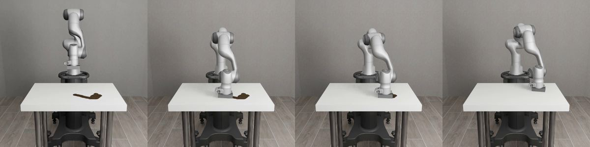
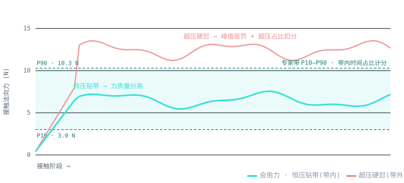
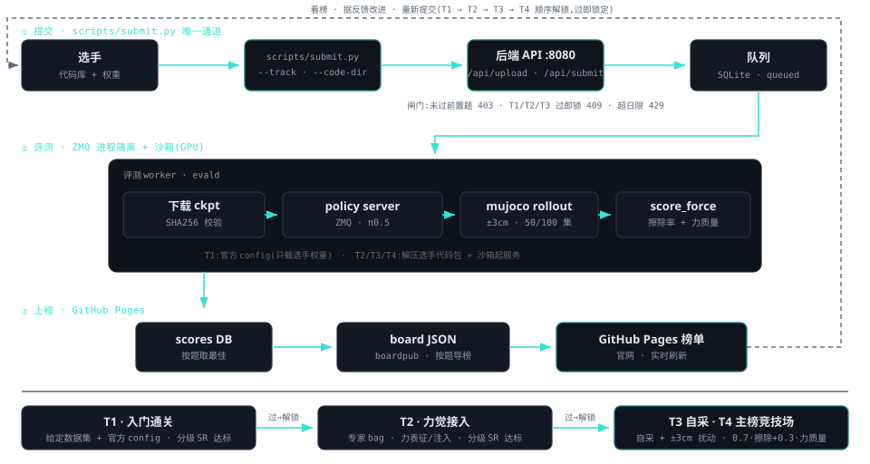

robosuite 的 Wipe 是天然的力觉密集任务:机械臂以受控接触力沿桌面擦除污渍—— 压力不足擦不掉、压力过大触发超力惩罚。机械爪腕部内置六维力/力矩传感器, 整场比赛的力信号即由此而来。
全卷统一用 π0.5(~3B,FluxVLA 旗舰)、单任务 Wipe、单仿真栈,比的是力觉算法而非模型大小。 开放挑战层层加码:T1 / T2 用主办方下发的数据(处理好的数据集 / 专家轨迹 bag); T3 / T4 你自己写脚本采集数据——主办方给一个可改进的弱采集脚手架,数据处理 / 模型 / 训练全自己来。
评测基线:每 episode 桌高在 ±3cm 内随机偏移,纯视觉策略读不准会戳桌 / 悬空,会用力才稳擦; 最难的 T4 再叠加随机外部扰动力——只有真正闭起力环、能抗扰的策略才稳得住。 分题提交 —— T1 / T2 / T3 / T4 各自交各自的模型、各自独立评测, 顺序解锁(过 T1 → T2 → T3 → 进 T4 主榜);T1 / T2 / T3 过了即锁定,T4 是竞技场可反复刷。

同一桌高偏移评测 seed(本例 −2.9cm)下的真实回放;右侧实时显示接触法向力 |Fz| 与专家带 P10–P90(3.0–10.3 N)。
分题提交 —— T1 / T2 / T3 / T4 各自提交各自的模型、各自独立评测。顺序解锁:没过 T1 不能交 T2,依此类推到 T4;T1 / T2 / T3 过了即锁定(再交被拒),T4 是竞技场可反复刷。每爬一档只多扛一件新事:跑通 → 力觉工程 → 自己造数据 → 扰动下反应式力控。T1 / T2 / T3 达标即满分,主榜只排 T4 绝对分。
| 档 | 名称 | 内容 | 计分 |
|---|---|---|---|
| T1 | 入门通关 | 用主办方给定的处理好数据集 + 官方 config 跑通 LoRA 微调,训出能擦的模型;只交权重、不带代码。 | 分级成功率 ≥ 低阈值 → 达标满分 |
| T2 | 力觉接入 开放 | 主办方只给专家轨迹 bag;力表征 / 力注入 / 模型 / 训练全部自己做。交权重 + 代码包。 | 分级成功率 ≥ 高阈值 → 达标满分(须先过 T1;±3cm 下基本要会用力才过) |
| T3 | 自采数据 开放 | 自己写采集脚本:在主办方给的弱采集脚手架上改进专家策略、采你自己的数据、再训练。交权重 + 代码包。 | 分级成功率 ≥ 阈值 → 达标满分(须先过 T2) |
| T4 | 硬核主榜 全卷重心 · 主榜 · 开放 | 评测在 ±3cm 桌高偏移 + 随机外部扰动力下;自采数据 + 抗扰动的反应式力觉冲最高分,改进在你的代码里生效。 | T4 = 0.7·擦除率 + 0.3·力质量分,降序排名(须先过 T3) |
以下只是一些可尝试的方向,非强制、不分级、不单独计分 —— 主榜只看 T4 绝对分。T3 / T4 数据可自采(改进弱采集脚本),改进只在你的数据与代码上做。
| 类别 | 可尝试方向 |
|---|---|
| A 数据级 | 改进采集策略(力控 / 调平 / 路径)、覆盖更多桌高、在自采数据里注入扰动以增强抗扰;以及增广 / 过滤 / 重加权 |
| B 表征级 | B1 滑动窗力历史 · B2 频域 / 统计特征 · B3 压缩归一化方式 · B4 离散 bins 分辨率 |
| C 注入通道级 | C1 连续 force token 注入 action expert · C2 离散 + 连续双通道 · C3 注入位点 prefix vs suffix |
| D 架构 / 策略 | D1 辅助力预测头 · D2 接触相位门控 · D3 力蒸馏(推理免传感器) · D4 小 MoE 融合 · D5 视觉退化课程 · D6 SARM 阶段加权 |
| 赛制 | 10 天纯线上,每队 2×A100-80G。分题提交:T1 用给定数据集 + 官方 config 跑通;T2 给专家轨迹 bag;T3 / T4 开放自采——主办方给可改进的弱采集脚手架,数据处理 / 模型 / 训练全自由。单模型 π0.5、单任务 Wipe、单仿真栈,版本锁定 FluxVLA 指定 commit,赛中不跟上游。 |
| 评测条件 | 评测基线:桌高 ±3cm 随机偏移,固定 seed 表全场一致;T4 额外叠加随机外部扰动力(施于腕部力传感器下游,会闭力环的策略才抗得住)。每题各交各的模型、各自评测,每模型 dev 50 / final 100 个独立 seed episode,取均值消采样噪声。dev seed 表随脚手架公开——本地评测分 = dev 榜分,可本地自测。 |
| 提交 | 每队每日(UTC+8)≤ 2 次,超额拒绝。顺序解锁:过 T1 才能交 T2,过 T2 才能交 T3,过 T3 才能交 T4;T1 / T2 / T3 过了即锁定。截止时刻提交通道关闭,当时的 dev 榜即最终成绩(榜单页有倒计时)。 |
| 红线 | ① 每题各交各的模型、各自独立评测;T2–T4 的数据 / IO / 力注入 / 模型 / 训练方法完全放开,主办方不审查代码、只看评测的达标与分数;② 自定义模块 / 表征 / 注入在你的代码里全生效(T4 的改进据此计分);③ 推理期只用白名单观测,仿真内部状态 / 私有 seed 碰不到(ZMQ 进程隔离 + 沙箱);④ 自采只在公开的训练 seed 段进行,与评测 seed 表不相交;Final 名次用私有 seed 表统跑,防 dev 过拟合;⑤ 伪造评测或绕过隔离,单题零分起。 |
单看成功率测不出"力"的价值:超压硬怼也能擦完,SR 好看而力行为糟。故主榜 T4 用连续的擦除率与力质量分,而非二值成功率;力质量分还专门考核侧向剪切力与力的平滑度——这两处正是"真会用力"与"裸加力"分得最开的地方。
四题各交各的模型、各自独立评测(每模型 dev 50 / final 100 个独立 seed episode,取均值),顺序解锁。所有阈值与标定端点由主办方赛前实测标定。
| 档 | 指标 | 计算方式 | 判定 / 排名 |
|---|---|---|---|
| T1 | 分级成功率 | 分级成功逐 episode {擦除≥90%→1,30–90%→0.5,<30%→0} 取均值。 | ≥ 低阈值(实测标定)→ 达标满分(绿勾) |
| T2 | 分级成功率 | 力觉模型独立评测的分级成功率。 | ≥ 高阈值 → 达标;须先过 T1 |
| T3 | 分级成功率 | 自采数据训练模型的分级成功率。 | ≥ 阈值 → 达标;须先过 T2 |
| T4 | 绝对分 | 0.7·擦除率 + 0.3·力质量分;擦除率 = 各 episode 擦除百分比的均值(连续量,非二值),在 ±3cm + 外部扰动力条件下计。 | 须先过 T3 解锁;按 T4 绝对分降序排名(主榜) |
| 力质量分 | 接触力行为 (进 T4,权重 0.3) | 0.28·法向带内 + 0.20·侧向力带内 + 0.25·平滑度 + 0.15·(1−超压) + 0.12·(1−峰值惩罚),均在接触相、由 scorer 从落盘力轨迹重算。 | 法向带内 = |Fz|∈[3.0,10.3] N 占比;侧向力 = |Fxy| 落在专家侧向力带占比;平滑度 = 接触力变化率的 SPARC 谱弧长映射 [0,1](越平滑越高);超压 = |Fz| > 1.5·P90 占比;峰值惩罚 = 峰值超 2·P90 程度 |

提交唯一通道是命令行 scripts/submit.py,按 T1 → T2 → T3 → T4 分题各交各的模型。T1 只交权重;T2 / T3 / T4 交权重 + 整个代码库(CLI 自动打包上传)。评测机用你的代码起推理服务,在 ZMQ 进程隔离 + 沙箱里跑分;成功率与力质量分均由主办方 harness 从仿真算出,选手自报无效。每队每日(UTC+8)≤ 2 次,顺序解锁(过 T1 才能交 T2,依此类推到 T4)。
T1(入门通关):用给定数据集 + 官方 config 跑通,只交权重:
T2 / T3 / T4(开放):加 --code-dir <你的代码库根>,CLI 自动把整个代码库打成 .tar.gz 上传;可选 --config-path 指定包内 config:
流程:① 用给定数据(T1 / T2)或自采数据(T3 / T4,改进弱采集脚本)自建处理与训练;② T2–T4 改过的代码(自定义 I/O、力注入、模型结构、采集脚本)随 --code-dir 自动打包,权重单独导出;③ submit.py 按 --track 分题上传(自动算 SHA256);④ 评测机隔离起服务、score_force.py 跑分 → Dev 榜实时、Final 截止冻结。
你可自由改数据采集 / 处理 / 表征 / 力注入 / 架构(T4 改进方向 A–D);但只拿得到 ZMQ 白名单观测、读不到私有 seed,分数由 harness 算 —— 改 I/O 是开放挑战要的,作弊作不了。
从命令行提交到 GitHub Pages 上榜的端到端数据流:前端 CLI → 后端闸门 → 评测 worker(ZMQ 进程隔离 + 沙箱)→ 榜单,以及 T1 → T2 → T3 → T4 顺序解锁、看榜改进的反馈闭环。

scripts/submit.py;T1 用官方 config、T2–T4 解压选手代码包在沙箱内评测;主榜按 T4 绝对分排名。赛中只需按题用 submit.py 提交模型自动评测上榜;最终截止前另需提交以下两项,用于复现核验与评审:
| 开源代码 + 设计文档 | 将完整代码(含采集脚本)开源到 GitHub,并附技术设计文档——详细写明环境配置、运行指令、算法逻辑(须可复现)。 |
| 演示视频 | 时长严格 ≤ 3 分钟,以屏幕录制 + 画中画(摄像头)形式:本人出镜讲解算法思路,并现场 Demo 运行效果。 |